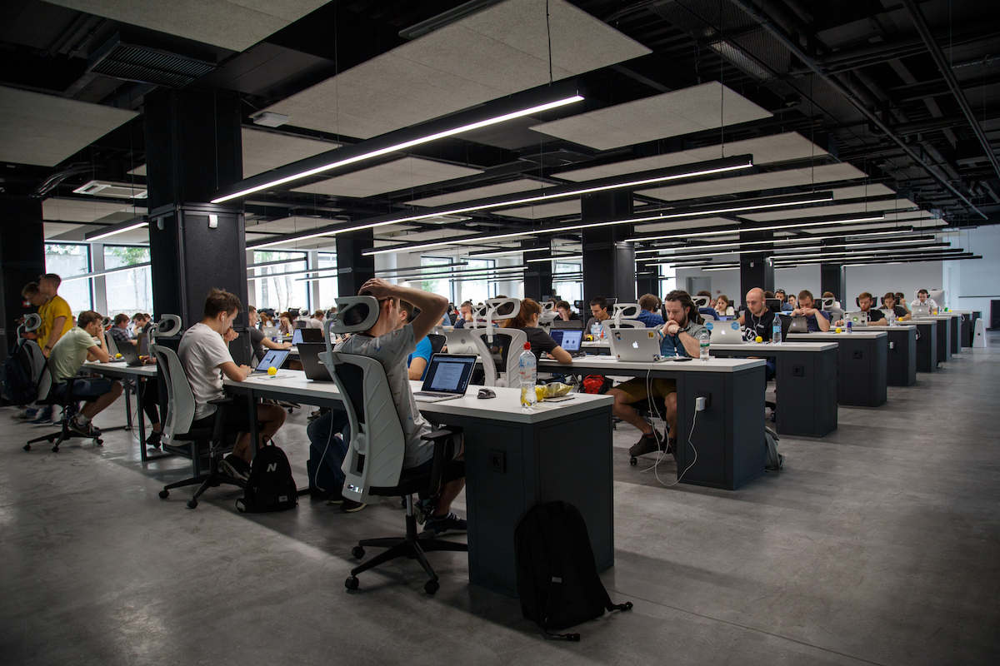
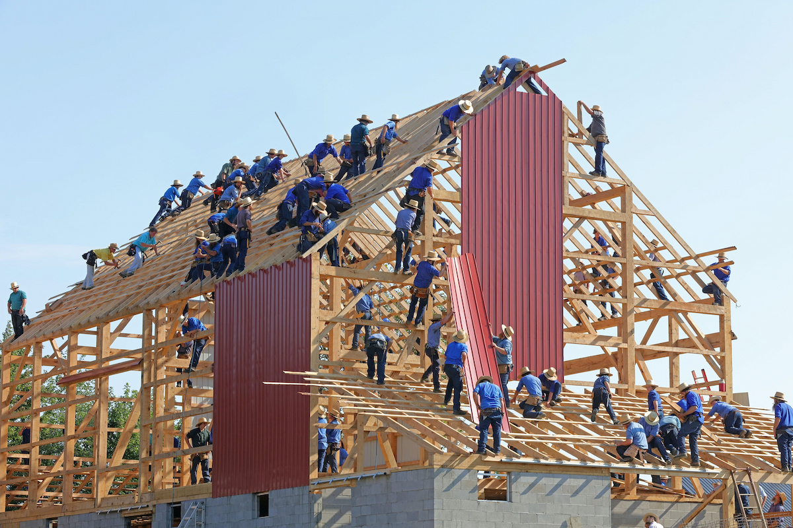

La vida antes de la pandemia
Mucho del trabajo se realizaba en lugares con mucha gente, para ahorrar espacio y tener al personal bajo supervisión la mayor parte del tiempo.
foto: Alex Kotliarskyi
Antes de la pandemia a pesar de cualquier riesgo a la salud ya existente la gente utilizaba el mínimo de protección.
foto: Randy Fath
